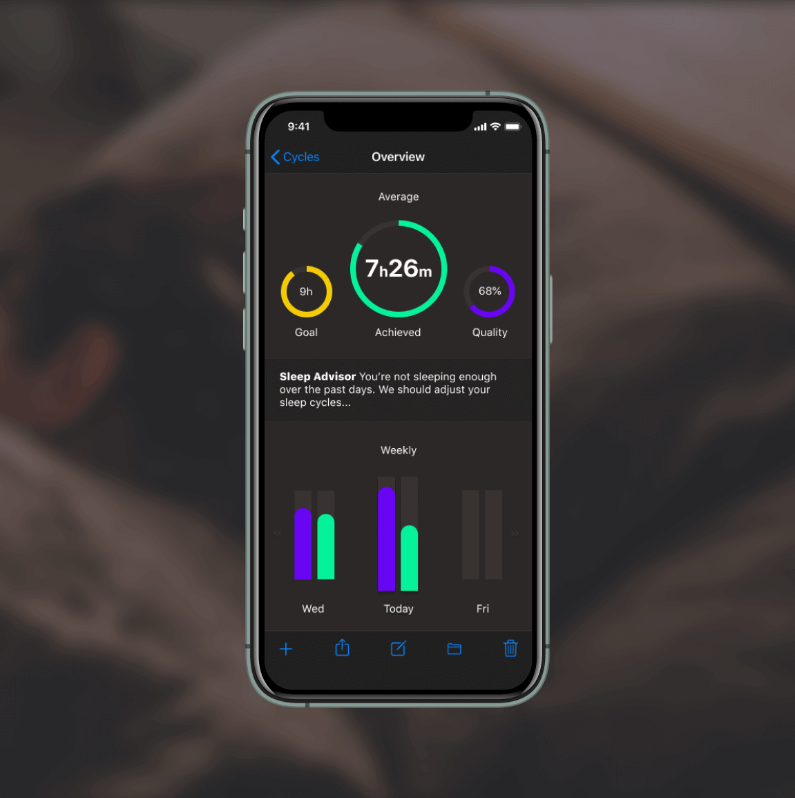
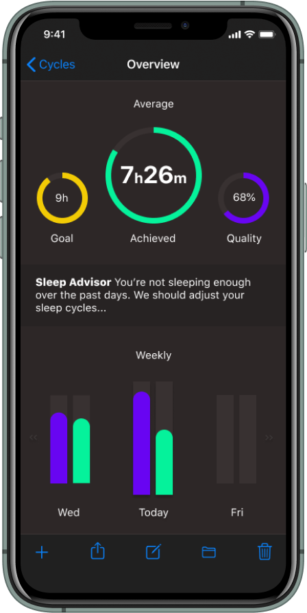

CYCLES
An interactive health tech app, focusing on data visualisation and offering meaningful actionable insights.
03/20 | prototype | concept | ui
I was tasked with creating a concept that communicates meaningful data, and offers actionable insights to the user.
There are many health and fitness apps on the market, with their own angle on data aggregation and visualisation. I wanted to concentrate on how we communicate this data, and how we can interact with it in a meaningful way and how the app can interact with us.
My main focus was on a ‘digital handshake’. How we ask the service to do an action, and how the app will communicate and handle this request.
The app concentrates on sleep, collecting data from sensors in the smartphone and smart watch. Using the collected data, it will communicate irregularities, and can change various time windows in order to achieve healthier, more consistent sleep with as little human interaction as possible.
